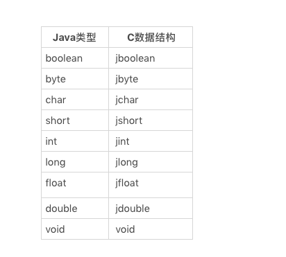

- 00 开篇词 为什么我们要学习Java虚拟机？.md.html
- 01 Java代码是怎么运行的？.md.html
- 02 Java的基本类型.md.html
- 03 Java虚拟机是如何加载Java类的.md.html
- 04 JVM是如何执行方法调用的？（上）.md.html
- 05 JVM是如何执行方法调用的？（下）.md.html
- 06 JVM是如何处理异常的？.md.html
- 07 JVM是如何实现反射的？.md.html
- 08 JVM是怎么实现invokedynamic的？（上）.md.html
- 09 JVM是怎么实现invokedynamic的？（下）.md.html
- 10 Java对象的内存布局.md.html
- 11 垃圾回收（上）.md.html
- 12 垃圾回收（下）.md.html
- 13 Java内存模型.md.html
- 14 Java虚拟机是怎么实现synchronized的？.md.html
- 15 Java语法糖与Java编译器.md.html
- 16 即时编译（上）.md.html
- 17 即时编译（下）.md.html
- 18 即时编译器的中间表达形式.md.html
- 19 Java字节码（基础篇）.md.html
- 20 方法内联（上）.md.html
- 21 方法内联（下）.md.html
- 22 HotSpot虚拟机的intrinsic.md.html
- 23 逃逸分析.md.html
- 24 字段访问相关优化.md.html
- 25 循环优化.md.html
- 26 向量化.md.html
- 27 注解处理器.md.html
- 28 基准测试框架JMH（上）.md.html
- 29 基准测试框架JMH（下）.md.html
- 30 Java虚拟机的监控及诊断工具（命令行篇）.md.html
- 31 Java虚拟机的监控及诊断工具（GUI篇）.md.html
- 32 JNI的运行机制.md.html
- 33 Java Agent与字节码注入.md.html
- 34 Graal：用Java编译Java.md.html
- 35 Truffle：语言实现框架.md.html
- 36 SubstrateVM：AOT编译框架.md.html
- 尾声丨道阻且长，努力加餐.html.md.html
- 工具篇 常用工具介绍.md.html
- 捐赠
32 JNI的运行机制
我们经常会遇见 Java 语言较难表达，甚至是无法表达的应用场景。比如我们希望使用汇编语言（如 X86_64 的 SIMD 指令）来提升关键代码的性能；再比如，我们希望调用 Java 核心类库无法提供的，某个体系架构或者操作系统特有的功能。
在这种情况下，我们往往会牺牲可移植性，在 Java 代码中调用 C/C++ 代码（下面简述为 C 代码），并在其中实现所需功能。这种跨语言的调用，便需要借助 Java 虚拟机的 Java Native Interface（JNI）机制。
关于 JNI 的例子，你应该特别熟悉 Java 中标记为native的、没有方法体的方法（下面统称为 native 方法）。当在 Java 代码中调用这些 native 方法时，Java 虚拟机将通过 JNI，调用至对应的 C 函数（下面将 native 方法对应的 C 实现统称为 C 函数）中。
public class Object {
public native int hashCode();
}
举个例子，Object.hashCode方法便是一个 native 方法。它对应的 C 函数将计算对象的哈希值，并缓存在对象头、栈上锁记录（轻型锁）或对象监视锁（重型锁所使用的 monitor）中，以确保该值在对象的生命周期之内不会变更。
native 方法的链接
在调用 native 方法前，Java 虚拟机需要将该 native 方法链接至对应的 C 函数上。
链接方式主要有两种。第一种是让 Java 虚拟机自动查找符合默认命名规范的 C 函数，并且链接起来。
事实上，我们并不需要记住所谓的命名规范，而是采用javac -h命令，便可以根据 Java 程序中的 native 方法声明，自动生成包含符合命名规范的 C 函数的头文件。
举个例子，在下面这段代码中，Foo类有三个 native 方法，分别为静态方法foo以及两个重载的实例方法bar。
package org.example;
public class Foo {
public static native void foo();
public native void bar(int i, long j);
public native void bar(String s, Object o);
}
通过执行javac -h . org/example/Foo.java命令，我们将在当前文件夹（对应-h后面跟着的.）生成名为org_example_Foo.h的头文件。其内容如下所示：
/* DO NOT EDIT THIS FILE - it is machine generated */
#include <jni.h>
/* Header for class org_example_Foo */
#ifndef _Included_org_example_Foo
#define _Included_org_example_Foo
#ifdef __cplusplus
extern "C" {
#endif
/*
* Class: org_example_Foo
* Method: foo
* Signature: ()V
*/
JNIEXPORT void JNICALL Java_org_example_Foo_foo
(JNIEnv *, jclass);
/*
* Class: org_example_Foo
* Method: bar
* Signature: (IJ)V
*/
JNIEXPORT void JNICALL Java_org_example_Foo_bar__IJ
(JNIEnv *, jobject, jint, jlong);
/*
* Class: org_example_Foo
* Method: bar
* Signature: (Ljava/lang/String;Ljava/lang/Object;)V
*/
JNIEXPORT void JNICALL Java_org_example_Foo_bar__Ljava_lang_String_2Ljava_lang_Object_2
(JNIEnv *, jobject, jstring, jobject);
#ifdef __cplusplus
}
#endif
#endif
这里我简单讲解一下该命名规范。
首先，native 方法对应的 C 函数都需要以Java_为前缀，之后跟着完整的包名和方法名。由于 C 函数名不支持/字符，因此我们需要将/转换为_，而原本方法名中的_符号，则需要转换为_1。
举个例子，org.example包下Foo类的foo方法，Java 虚拟机会将其自动链接至名为Java_org_example_Foo_foo的 C 函数中。
当某个类出现重载的 native 方法时，Java 虚拟机还会将参数类型纳入自动链接对象的考虑范围之中。具体的做法便是在前面 C 函数名的基础上，追加__以及方法描述符作为后缀。
方法描述符的特殊符号同样会被替换掉，如引用类型所使用的;会被替换为_2，数组类型所使用的[会被替换为_3。
基于此命名规范，你可以手动拼凑上述代码中，Foo类的两个bar方法所能自动链接的 C 函数名，并用javac -h命令所生成的结果来验证一下。
第二种链接方式则是在 C 代码中主动链接。
这种链接方式对 C 函数名没有要求。通常我们会使用一个名为registerNatives的 native 方法，并按照第一种链接方式定义所能自动链接的 C 函数。在该 C 函数中，我们将手动链接该类的其他 native 方法。
举个例子，Object类便拥有一个registerNatives方法，所对应的 C 代码如下所示：
// 注：Object 类的 registerNatives 方法的实现位于 java.base 模块里的 C 代码中
static JNINativeMethod methods[] = {
{"hashCode", "()I", (void *)&JVM_IHashCode},
{"wait", "(J)V", (void *)&JVM_MonitorWait},
{"notify", "()V", (void *)&JVM_MonitorNotify},
{"notifyAll", "()V", (void *)&JVM_MonitorNotifyAll},
{"clone", "()Ljava/lang/Object;", (void *)&JVM_Clone},
};
JNIEXPORT void JNICALL
Java_java_lang_Object_registerNatives(JNIEnv *env, jclass cls)
{
(*env)->RegisterNatives(env, cls,
methods, sizeof(methods)/sizeof(methods[0]));
}
我们可以看到，上面这段代码中的 C 函数将调用RegisterNatives API，注册Object类中其他 native 方法所要链接的 C 函数。并且，这些 C 函数的名字并不符合默认命名规则。
当使用第二种方式进行链接时，我们需要在其他 native 方法被调用之前完成链接工作。因此，我们往往会在类的初始化方法里调用该registerNatives方法。具体示例如下所示：
public class Object {
private static native void registerNatives();
static {
registerNatives();
}
}
下面我们采用第一种链接方式，并且实现其中的bar(String, Object)方法。如下所示：
// foo.c
#include <stdio.h>
#include "org_example_Foo.h"
JNIEXPORT void JNICALL Java_org_example_Foo_bar__Ljava_lang_String_2Ljava_lang_Object_2
(JNIEnv *env, jobject thisObject, jstring str, jobject obj) {
printf("Hello, World\n");
return;
}
然后，我们可以通过 gcc 命令将其编译成为动态链接库：
# 该命令仅适用于 macOS
$ gcc -I$JAVA_HOME/include -I$JAVA_HOME/include/darwin -o libfoo.dylib -shared foo.c
这里需要注意的是，动态链接库的名字须以lib为前缀，以.dylib(或 Linux 上的.so）为扩展名。在 Java 程序中，我们可以通过System.loadLibrary("foo")方法来加载libfoo.dylib，如下述代码所示：
package org.example;
public class Foo {
public static native void foo();
public native void bar(int i, long j);
public native void bar(String s, Object o);
int i = 0xDEADBEEF;
public static void main(String[] args) {
try {
System.loadLibrary("foo");
} catch (UnsatisfiedLinkError e) {
e.printStackTrace();
System.exit(1);
}
new Foo().bar("", "");
}
}
如果libfoo.dylib不在当前路径下，我们可以在启动 Java 虚拟机时配置java.library.path参数，使其指向包含libfoo.dylib的文件夹。具体命令如下所示：
$ java -Djava.library.path=/PATH/TO/DIR/CONTAINING/libfoo.dylib org.example.Foo
Hello, World
JNI 的 API
在 C 代码中，我们也可以使用 Java 的语言特性，如 instanceof 测试等。这些功能都是通过特殊的 JNI 函数（JNI Functions）来实现的。
Java 虚拟机会将所有 JNI 函数的函数指针聚合到一个名为JNIEnv的数据结构之中。
这是一个线程私有的数据结构。Java 虚拟机会为每个线程创建一个JNIEnv，并规定 C 代码不能将当前线程的JNIEnv共享给其他线程，否则 JNI 函数的正确性将无法保证。
这么设计的原因主要有两个。一是给 JNI 函数提供一个单独命名空间。二是允许 Java 虚拟机通过更改函数指针替换 JNI 函数的具体实现，例如从附带参数类型检测的慢速版本，切换至不做参数类型检测的快速版本。
在 HotSpot 虚拟机中，JNIEnv被内嵌至 Java 线程的数据结构之中。部分虚拟机代码甚至会从JNIEnv的地址倒推出 Java 线程的地址。因此，如果在其他线程中使用当前线程的JNIEnv，会使这部分代码错误识别当前线程。
JNI 会将 Java 层面的基本类型以及引用类型映射为另一套可供 C 代码使用的数据结构。其中，基本类型的对应关系如下表所示：

引用类型对应的数据结构之间也存在着继承关系，具体如下所示：
jobject
|- jclass (java.lang.Class objects)
|- jstring (java.lang.String objects)
|- jthrowable (java.lang.Throwable objects)
|- jarray (arrays)
|- jobjectArray (object arrays)
|- jbooleanArray (boolean arrays)
|- jbyteArray (byte arrays)
|- jcharArray (char arrays)
|- jshortArray (short arrays)
|- jintArray (int arrays)
|- jlongArray (long arrays)
|- jfloatArray (float arrays)
|- jdoubleArray (double arrays)
我们回头看看Foo类 3 个 native 方法对应的 C 函数的参数。
JNIEXPORT void JNICALL Java_org_example_Foo_foo
(JNIEnv *, jclass);
JNIEXPORT void JNICALL Java_org_example_Foo_bar__IJ
(JNIEnv *, jobject, jint, jlong);
JNIEXPORT void JNICALL Java_org_example_Foo_bar__Ljava_lang_String_2Ljava_lang_Object_2 (JNIEnv *, jobject, jstring, jobject);
静态 native 方法foo将接收两个参数，分别为存放 JNI 函数的JNIEnv指针，以及一个jclass参数，用来指代定义该 native 方法的类，即Foo类。
两个实例 native 方法bar的第二个参数则是jobject类型的，用来指代该 native 方法的调用者，也就是Foo类的实例。
如果 native 方法声明了参数，那么对应的 C 函数将接收这些参数。在我们的例子中，第一个bar方法声明了 int 型和 long 型的参数，对应的 C 函数则接收 jint 和 jlong 类型的参数；第二个bar方法声明了 String 类型和 Object 类型的参数，对应的 C 函数则接收 jstring 和 jobject 类型的参数。
下面，我们继续修改上一小节中的foo.c，并在 C 代码中获取Foo类实例的i字段。
// foo.c
#include <stdio.h>
#include "org_example_Foo.h"
JNIEXPORT void JNICALL Java_org_example_Foo_bar__Ljava_lang_String_2Ljava_lang_Object_2
(JNIEnv *env, jobject thisObject, jstring str, jobject obj) {
jclass cls = (*env)->GetObjectClass(env, thisObject);
jfieldID fieldID = (*env)->GetFieldID(env, cls, "i", "I");
jint value = (*env)->GetIntField(env, thisObject, fieldID);
printf("Hello, World 0x%x\n", value);
return;
}
我们可以看到，在 JNI 中访问字段类似于反射 API：我们首先需要通过类实例获得FieldID，然后再通过FieldID获得某个实例中该字段的值。不过，与 Java 代码相比，上述代码貌似不用处理异常。事实果真如此吗？
下面我就尝试获取了不存在的字段j，运行结果如下所示：
$ java org.example.Foo
Hello, World 0x5
Exception in thread "main" java.lang.NoSuchFieldError: j
at org.example.Foo.bar(Native Method)
at org.example.Foo.main(Foo.java:20)
我们可以看到，printf语句照常执行并打印出Hello, World 0x5，但这个数值明显是错误的。当从 C 函数返回至 main 方法时，Java 虚拟机又会抛出NoSuchFieldError异常。
实际上，当调用 JNI 函数时，Java 虚拟机便已生成异常实例，并缓存在内存中的某个位置。与 Java 编程不一样的是，它并不会显式地跳转至异常处理器或者调用者中，而是继续执行接下来的 C 代码。
因此，当从可能触发异常的 JNI 函数返回时，我们需要通过 JNI 函数ExceptionOccurred检查是否发生了异常，并且作出相应的处理。如果无须抛出该异常，那么我们需要通过 JNI 函数ExceptionClear显式地清空已缓存的异常。
具体示例如下所示（为了控制代码篇幅，我仅在第一个GetFieldID后检查异常以及清空异常）：
// foo.c
#include <stdio.h>
#include "org_example_Foo.h"
JNIEXPORT void JNICALL Java_org_example_Foo_bar__Ljava_lang_String_2Ljava_lang_Object_2
(JNIEnv *env, jobject thisObject, jstring str, jobject obj) {
jclass cls = (*env)->GetObjectClass(env, thisObject);
jfieldID fieldID = (*env)->GetFieldID(env, cls, "j", "I");
if((*env)->ExceptionOccurred(env)) {
printf("Exception!\n");
(*env)->ExceptionClear(env);
}
fieldID = (*env)->GetFieldID(env, cls, "i", "I");
jint value = (*env)->GetIntField(env, thisObject, fieldID);
// we should put an exception guard here as well.
printf("Hello, World 0x%x\n", value);
return;
}
局部引用与全局引用
在 C 代码中，我们可以访问所传入的引用类型参数，也可以通过 JNI 函数创建新的 Java 对象。
这些 Java 对象显然也会受到垃圾回收器的影响。因此，Java 虚拟机需要一种机制，来告知垃圾回收算法，不要回收这些 C 代码中可能引用到的 Java 对象。
这种机制便是 JNI 的局部引用（Local Reference）和全局引用（Global Reference）。垃圾回收算法会将被这两种引用指向的对象标记为不可回收。
事实上，无论是传入的引用类型参数，还是通过 JNI 函数（除NewGlobalRef及NewWeakGlobalRef之外）返回的引用类型对象，都属于局部引用。
不过，一旦从 C 函数中返回至 Java 方法之中，那么局部引用将失效。也就是说，垃圾回收器在标记垃圾时不再考虑这些局部引用。
这就意味着，我们不能缓存局部引用，以供另一 C 线程或下一次 native 方法调用时使用。
对于这种应用场景，我们需要借助 JNI 函数NewGlobalRef，将该局部引用转换为全局引用，以确保其指向的 Java 对象不会被垃圾回收。
相应的，我们还可以通过 JNI 函数DeleteGlobalRef来消除全局引用，以便回收被全局引用指向的 Java 对象。
此外，当 C 函数运行时间极其长时，我们也应该考虑通过 JNI 函数DeleteLocalRef，消除不再使用的局部引用，以便回收被引用的 Java 对象。
另一方面，由于垃圾回收器可能会移动对象在内存中的位置，因此 Java 虚拟机需要另一种机制，来保证局部引用或者全局引用将正确地指向移动过后的对象。
HotSpot 虚拟机是通过句柄（handle）来完成上述需求的。这里句柄指的是内存中 Java 对象的指针的指针。当发生垃圾回收时，如果 Java 对象被移动了，那么句柄指向的指针值也将发生变动，但句柄本身保持不变。
实际上，无论是局部引用还是全局引用，都是句柄。其中，局部引用所对应的句柄有两种存储方式，一是在本地方法栈帧中，主要用于存放 C 函数所接收的来自 Java 层面的引用类型参数；另一种则是线程私有的句柄块，主要用于存放 C 函数运行过程中创建的局部引用。
当从 C 函数返回至 Java 方法时，本地方法栈帧中的句柄将会被自动清除。而线程私有句柄块则需要由 Java 虚拟机显式清理。
进入 C 函数时对引用类型参数的句柄化，和调整参数位置（C 调用和 Java 调用传参的方式不一样），以及从 C 函数返回时清理线程私有句柄块，共同造就了 JNI 调用的额外性能开销（具体可参考该 stackoverflow 上的回答）。
总结与实践
今天我介绍了 JNI 的运行机制。
Java 中的 native 方法的链接方式主要有两种。一是按照 JNI 的默认规范命名所要链接的 C 函数，并依赖于 Java 虚拟机自动链接。另一种则是在 C 代码中主动链接。
JNI 提供了一系列 API 来允许 C 代码使用 Java 语言特性。这些 API 不仅使用了特殊的数据结构来表示 Java 类，还拥有特殊的异常处理模式。
JNI 中的引用可分为局部引用和全局引用。这两者都可以阻止垃圾回收器回收被引用的 Java 对象。不同的是，局部引用在 native 方法调用返回之后便会失效。传入参数以及大部分 JNI API 函数的返回值都属于局部引用。
今天的实践环节，请阅读该文档中的 Performance pitfalls 以及 Correctness pitfalls 两节。
© 2019 - 2023 Liangliang Lee. Powered by gin and hexo-theme-book.